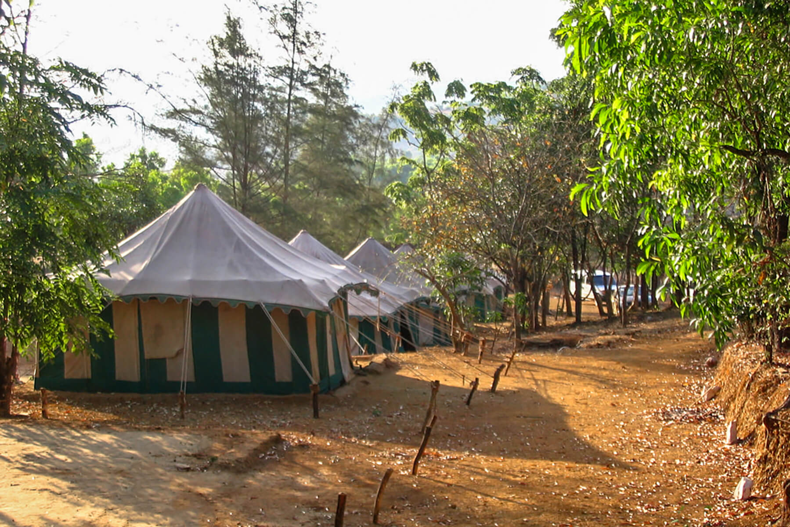
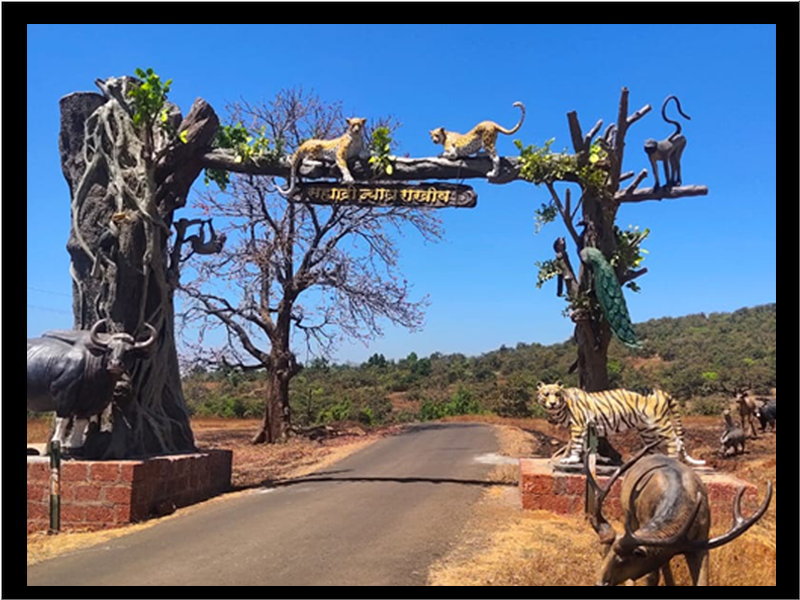

Dajipur Wildlife Sanctuary |
It's large area covered by forest. Timing is 6:30 AM to 2:30 PM for entry.
Private vehicles are not allowed inside. You need to hire vehicles at gate which cost around rs. 1800 . As per rule 8 person are allowed in one vehicle however they don't club different groups by them self. It is subject to mutual agreement between 2 different groups. So if you are couple or family of 4 you still need to pay 1800. Just tip. Insist for open jeep vehicle for better safari experience, You may have to wait for that at gate.
We were couple and entered in forest at around 1 pm unfortunately couldn't spot any animal however safari through forest is good.
Dajipur
|
Chandoli National Park |
On the north of Kolhapur District, land of tiger exist in western ghats. chandoli National Park is now declared as sixth tiger reserve of Maharashtra as Sahyadri Tiger Reserve.
Chandoli National Park Has a big reservoir over which the name has originated. it is home to many wild animals like Gaur, Sambar, sloth bear,leopard and tigers. Though the number of tigers are very less but the forest is Evergreen and tourist like to visit it around the year.
This sanctuary harbours many resorts around it and it has been a great destination for many tourist.
A new jungle safari route of 105 kilometre has been initiated recently.Platues and meadows are scenic beauty which attracts many nature lovers.
Chandoli
|